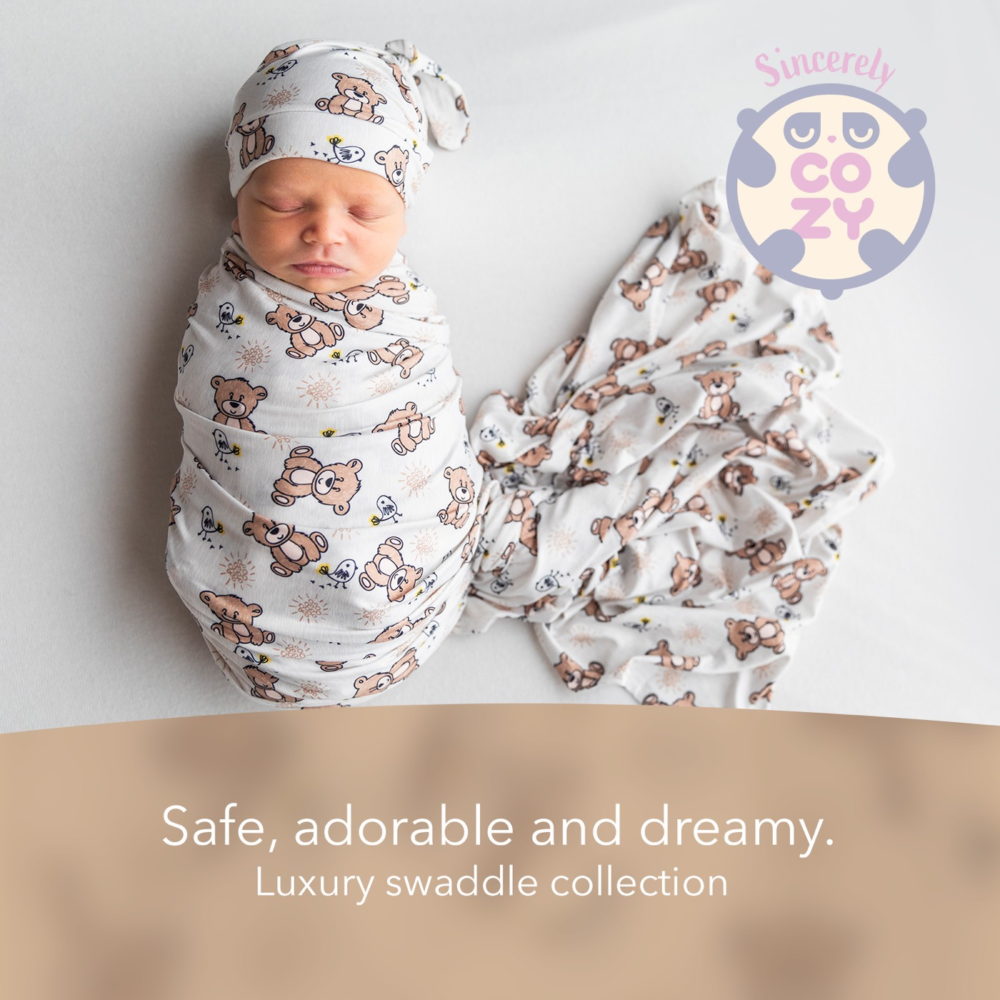

More prints
Baby Blue · Dreamy Clouds · Little Butterfly · Pickaboo Bear · Rose Petal

Bamboo Swaddle Blanket
Cozy Teddy Bear covers a warm cream background with a scatter of illustrated teddy bears in tan and brown. Between the bears are tiny birds with yellow accents and little sunburst doodles, so the print looks busy and playful up close and settles into a gentle texture from a distance. The bears sit at all sorts of angles, so there is no wrong way up when you wrap.
The blanket itself measures 34" × 40" and is made from 95% bamboo rayon, the same fabric across the whole Sincerely Cozy range. Bamboo rayon is breathable and lightweight, hypoallergenic, and stretchy enough to wrap without a fight. The site's own promise is that it stays soft after washing, which matters for a print you will probably reach for again and again.
The earthy browns and creams also suit parents who prefer neutral tones to pastel pink or blue. Use it as a swaddle first, then keep using it as a nursing cover, stroller canopy, burp cloth or tummy time blanket.
The set is photographed with a matching knotted hat. Machine washable; see our care instructions and why we use bamboo.
Baby Blue · Dreamy Clouds · Little Butterfly · Pickaboo Bear · Rose Petal